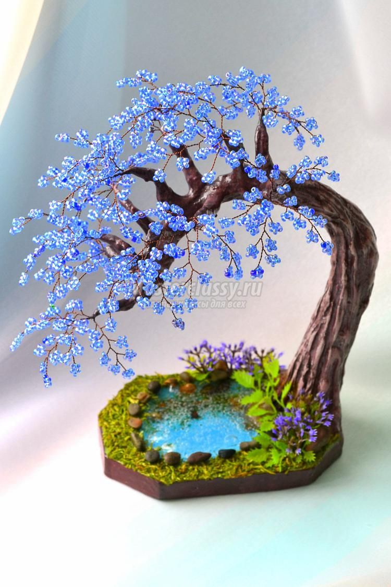

Welcome to 86- lemn
Arbore de cafea: îngrijire la domiciliu
2020.09.22 02:45frutos.info Grădina Grădină de legume floricultura Protecția plantelor
Plante interioare
Galerie (Foto) Plante interioare Îngrijirea plantelor Controlul dăunătorilor transplant adăpare Ustensile, vase vaccinare iluminat reproducere informații Plante ornamentale bonsai Bromelii Plante acvatice distilare Frunze decorative Arbori și arbuști Design interior ikebană cactuși Palmieri interiori înflorire bulbos orhidee ferigi suculentele Flori pe balconGradina ornamentala
Îngrijirea florilor Copaci și arbuști Trandafiri de gradina Iaz la cabana Design peisagistic Bulbi flori Dăunători și boli Plante exoticeArbore de cafea: îngrijire la domiciliu
Tipuri de cafea Grijă de pomul de cafea acasăArborele de cafea sau pur și simplu cafeaua (Coffea) este un gen de veghene din familia Marenovae (Rubiaceae), cu peste 90 de specii de arbori și arbuști mici, găsite în sălbăticie în Asia tropicală și Africa tropicală și sudică. Cu toate acestea, speciile "domesticite", și anume, cafeaua arabă (Coffea arabica) și cafeaua congoleză (Coffea canephora), și-au extins în mod semnificativ zona de distribuție. Sunt cultivate comercial în India, Indonezia, Cuba și Jamaica, Sumatra și Brazilia și multe alte țări.
Tipuri de cafea
Cafea arabă - cel mai frecvent tip de cultură. Dintre numărul total de plantații, cota sa este de aproximativ 80-90%. Acesta este un copac slab, de aproximativ 5-10 m, cu ramificație abundentă sau arbust întins. Sistemul radicular este pivotal, cu o rădăcină centrală groasă, care rar ajunge mai adânc decât 45 cm în sol. Frunzele sunt verde închis, opus, scurt petiolat, de la eliptic până la alungit-ovoid. Plăci de frunze 6-12 cm lungime și 4-8 cm lățime, piele, lucios, ușor ondulate, cu o vențiune distinctă.
În condiții de creștere optimă, vârsta de înflorire și fructare începe după 3-4 ani de la plantarea semințelor. Florile sunt de culoare albă, parfumată, cu un diametru de 10-15 mm, cu flori separate, cu 5 - 6 petale înguste, colectate în numeroase inflorescențe cu flori puțini, fără pedunculi. Înflorit scurt. După epuizare, se formează fructe verde oval-eliptic, ajungând la 15 mm în lungime și, pe măsură ce se maturează (după 8 până la 9 luni), dobândesc o culoare roșu închis. În interiorul fiecărui fruct sunt două semințe pereche galben-verzui, din care, după o prelucrare adecvată, primește una dintre cele mai celebre băuturi - cafea arabica.
Cafeaua congoleză este a doua cea mai mare plantă cultivată. Acesta diferă de colegii săi de mari, de până la 32 cm în lungime și de 8 cm în lățime, frunze și un sistem rădăcină mai superficial, care coboară doar la 15 cm în adâncime. În plus, ramurile sale vechi mai mici cad în timp, iar în limba arabă trebuie să fie tăiate. Vârsta de înflorire și fructare la această specie vine puțin mai devreme, după 2,5 - 3 ani, iar fructele se coacă în 10-11 luni. Florile au, de asemenea, o mică diferență: partea din mijloc a fiecărei petale este colorată maro deschis. Cafeaua Robusta este obținută din semințele acestei plante. Uneori, acest nume este utilizat și pentru a desemna specia însăși - Coffea robusta.
Cafeaua congoleză nu este larg răspândită din cauza gustului său proastă și a aromelor mai puțin intense decât arabica. Cu toate acestea, această specie este mai rezistentă la condițiile climatice și bolile nefavorabile și este mult mai productivă decât arabă.
Cafea liberiană (Coffea Liberica) - una dintre puținele specii populare, plantațiile principale ale cărora sunt situate în Filipine. Acesta este un copac destul de înalt, ajungând la 20 de metri înălțime. Fructele sale sunt mult mai mari, precum și semințele din care se produce cafea exotică.
Cafea cameruniană sau Coffea Charrieriana este o rezervație forestieră endemică în vestul Camerunului. Vederea a fost deschisă și descrisă destul de recent și, conform informațiilor limitate disponibile din diferite surse, se poate spune că nu diferă în înălțime față de cea descrisă mai sus. Frunzele sunt ovale-eliptice, cu un punct ascuțit la capăt și un vârf alungit. Sharya este, de asemenea, utilizat în industria alimentară, dar contribuția sa la cultura de cafea generală este neglijabilă. Principalul avantaj și o proprietate neobișnuită este absența cofeinei.
Grijă de pomul de cafea acasă
Dintre cele patru specii domesticite, în mod obișnuit, cafeaua arabă este folosită acasă, deoarece, deși este mai capricioasă decât cea congoleză, are o dimensiune relativ compactă și este pur și simplu mai faimoasă. Prin urmare, atunci când descriem condițiile optime de detenție, ne vom concentra pe el.
De iluminat. Cafeaua preferă iluminarea difuză luminată de ordinul a 3000 - 3900 lux. Când este așezat într-o cameră, ferestrele sunt cele mai potrivite orientate spre est sau spre vest.
Pe fereastra de nord va fi prea întunecată, iar aici pomul nu numai că nu va înflori, ci și că va încetini dezvoltarea. Lăstarii vor începe să se întindă puternic, subțiri, iar frunzele sunt zdrobite. Dacă nu există alte opțiuni de locație, puteți compensa lipsa de lumină cu ajutorul fitoamelor, menținând o zi luminoasă artificială timp de 10 până la 12 ore.
Fereastra sudică a plantei nu este, de asemenea, foarte potrivită, deoarece va necesita umbrirea luminii de la lumina directă a soarelui, care ar putea arde frunze destul de delicate.
Temperatura. De la primăvară la mijlocul toamnei, intervalul de temperatură trebuie menținut la 22 până la 26 ° C. De regulă, acest interval corespunde condițiilor zonei medii a Rusiei, astfel că nu există nici o dificultate deosebită în asigurarea unui astfel de regim. Cu toate acestea, cu o vară mai fierbinte, este mai bine să scoateți un copac pe balcon sau în grădină, unde există o circulație constantă a aerului, și găsiți un loc pentru el în umbra parțială, cu protecție împotriva vântului și a ploii.
În timpul iernii, cafeaua trebuie să scadă temperatura până la 16 - 18 ° C. În cazul în care apartamentul nu are o cameră special echipată, astfel de condiții de temperatură, sau aproape de acestea, pot fi create prin mutarea vasului de plante mai aproape de geam și separându-l de aerul cald al restului camerei. În special, este necesar să protejați cafeaua de aerul fierbinte al bateriilor de încălzire centrală. În plus, nu tolerează curenții de aer și, atunci când este aerisit, are nevoie de o protecție fiabilă împotriva fluxurilor reci din stradă.
Udarea. În timpul perioadei de vegetație activă, udarea trebuie să fie abundentă, solul trebuie menținut într-o stare ușor umedă, evitând uscarea profundă. Dar, de asemenea, este extrem de nedorit să inundați planta, deoarece udarea solului contribuie la dezvoltarea putregaiului rădăcinii, care poate distruge rapid sistemul de rădăcini.
Cu un conținut de iarnă rece, udarea este redusă puțin, permițând stratului superior de sol să se usuce ușor. În această perioadă, pericolul de răcire cu apă crește de mai multe ori datorită evaporării lente a umezelii.
La udare, utilizați numai apă moale și bine stabilită la temperatura camerei. Pentru al înmuia mai mult, puteți să-l ignorați printr-un filtru sau prin urmări acidă cu acid acetic sau citric astfel încât aciditatea să nu fie palpabilă.
Umiditatea aerului Arborele de cafea nu are nevoie de umiditate ridicată, dar răspunde bine la pulverizarea regulată cu apă caldă moale, a cărei temperatură este chiar deasupra temperaturii camerei.
Solului. Pentru cafea, ușor acid, cu un pH de 5,0 - 5,5, sol gros, nutritiv. Pentru cultivarea sa, puteți achiziționa sol specializat pentru pomul de cafea și, în lipsa acestuia, utilizați soluri pregătite pentru plante care preferă soluri acide și ușor acizi, de exemplu, pentru azalee , hortensii și rododendroni , adăugând nisip și argilă acolo. Cu toate acestea, producătorii cu experiență nu sunt sfătuiți să planteze cafeaua într-un amestec de lămâie pentru lămâi, deși instrucțiunile îl descriu ca fiind potrivite pentru această plantă.
Înainte de a planta în partea de jos a vasului, creați un strat gros de drenare din argilă expandată, care împiedică apariția apei stagnante la rădăcini. Potul în sine trebuie să fie suficient de mare și adânc, proporțional cu dimensiunea plantei.
Top dressing . Din primăvară până la mijlocul toamnei, copacii sunt hrăniți la fiecare două săptămâni cu un îngrășământ complex mineral pentru azalee sau hortensii. În timpul perioadei de repaus, planta nu are nevoie de pansament superior.
Transplant. Probele tinere sunt transplantate în fiecare primăvară și, pe măsură ce cresc, iar creșterea transplanturilor devine din ce în ce mai mică. Plantele mari fac fără transplantare, dar actualizează anual stratul superior al solului.
Crop . De regulă, nu are nevoie de tăierea cafelei, deși, dacă este necesar, este posibil să se formeze un copac după cum doriți, prin ciupirea vârfurilor lăstarilor și îndepărtarea ramurilor în exces prin îngroșarea coroanei.
Reproducere . Principalele metode de reproducere la domiciliu sunt sămânța și grefarea. Pe butași se taie părțile superioare ale lăstarilor semi-lemnoși, lăsându-i la 2-3 noduri. Sub perechea inferioară de noduri la o distanță de 1,5-2 cm, se realizează o tăietură oblică, iar tăierea rezultată este instilată într-un amestec de nisip și turbă. Pentru a îmbunătăți formarea rădăcinilor, pot fi utilizați stimulenți de creștere, cum ar fi o soluție de heteroauxină. Planta tulpina este plasat într-o seară de mini. Formarea rădăcinilor durează aproximativ 1 până la 2 luni.
Pentru reproducerea semințelor, sunt adecvate numai semințele proaspete recoltate. Prin urmare, această metodă este utilizată extrem de rar.
Boli și dăunători . Cele mai comune dăunători sunt albă și albă . La primele semne de deteriorare, plantele mari trebuie tratate cu substanțe chimice corespunzătoare, iar cele mici trebuie spalate bine sub un duș cald; scutul trebuie curățat cu un tampon de bumbac înmuiat într-un lichid care conține alcool care dizolvă scuturile de ceară.
Dintre alte boli decât cele care pot fi cauzate de îngrijirea necorespunzătoare (de exemplu, putregaiul de rădăcină din cauza golurilor regulate), mucegaiul sub formă de pudră afectează adesea cafeaua. Pentru combaterea acesteia, există medicamente speciale fungicide gata preparate, cum ar fi Fundazol, Topaz etc.
Consiliul. Arborele de cafea nu este recomandat să fie amplasat lângă alte plante interioare . După cum arată practica, este mai degrabă intolerant față de concurenți și iubește spațiul liber.
0în urmă înainte
Fittonia: îngrijire la domiciliu
Fanii floricolei de interior, de regulă, sunt dependenți de plantele decorative cu frunze din mai multe motive. Oh ...
Gardenia: îngrijire în casă ...
Despre Gardenia - o planta minunata cu luciu, ca si cum ar fi lustruit, frunze verzi bogate, decorate cu foarte ...
Saberfoot: aterizare și îngrijire
Moda pentru minimalism și grădinărit decorative a intrat în cultura peisajului național de grădinărit relativ recent. Asta ...
Pomul iubirii (ahichrizon): ureche ...
Aichryson (Aichryson) este un gen de suculente din familia Crassulaceae (Crassulaceae), numarand aproximativ 15 specii de plante erbacee ...
De ce frunzele ciclului devin galbene ...
Cyclamen - una dintre cele mai atractive plante de interior, frumusete, gratie si nobilimea florilor sale nu este aceeasi ...
Orchidul Dracula
Genul Dracula (Dracula) din familia Orchid (Orchidaceae) include aproximativ 120 de specii de plante epifite care cresc în ...
Du-te în sus Copyright © 2005 - 2020 frutos.info . Materialele site-ului sunt protejate prin drepturi de autor. Copierea este interzisă! Administrația nu este responsabilă de consecințele cauzate de utilizarea informațiilor publicate pe site.